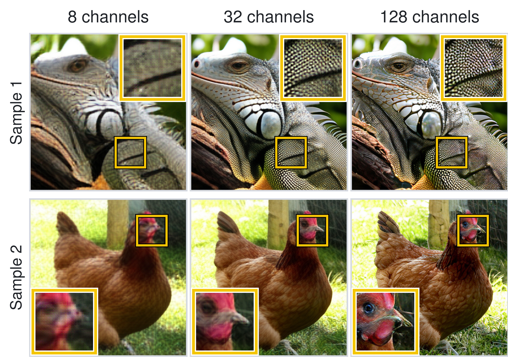
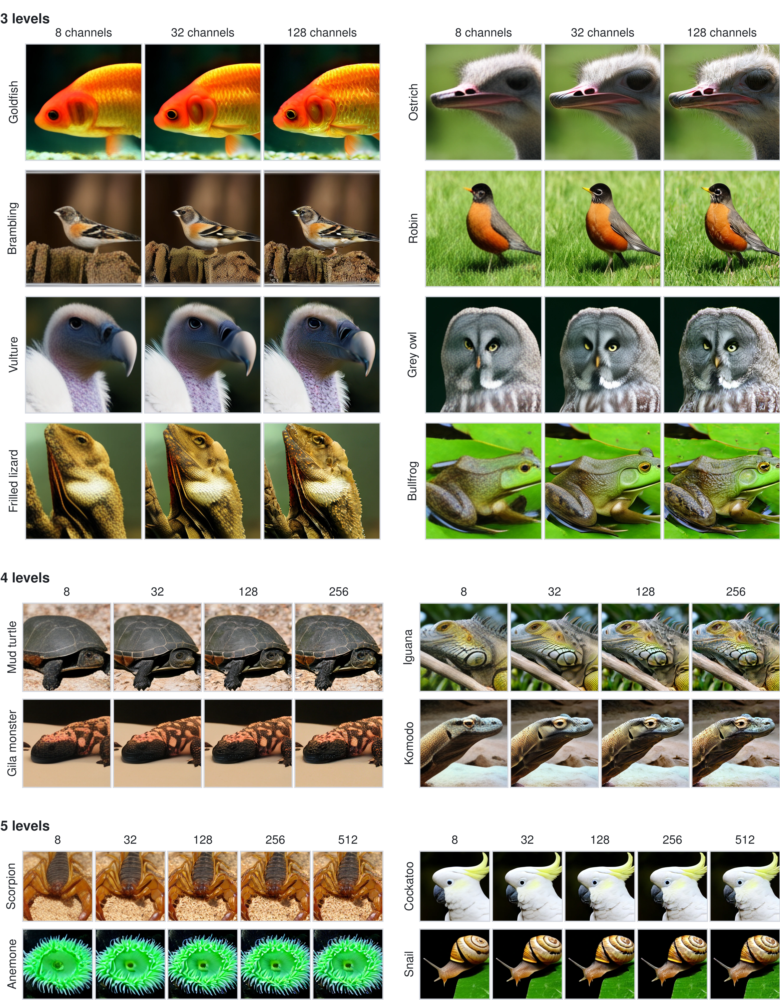

Compute efficiency
Then high compression pays off.
At limited training and inference budgets, APEX makes fewer tokens outperform less-compressed models.

Asynchronous Prefix denoising for EXtreme compression
1Lightricks 2Hebrew University of Jerusalem
Global time
Global progress
Token sequence
Decoded image by level
We make high-compression latent spaces competitive by enabling channel scaling.
Fewer latent tokens promise cheaper diffusion. Yet aggressive latent compression creates a reconstruction-generation dilemma: adding channels improves reconstruction but makes generation harder. We introduce APEX, short for Asynchronous Prefix denoising for EXtreme compression, which pairs a hierarchical latent space with asynchronous denoising over channel groups. Our autoencoder orders channel prefixes from structure to detail, while one shared denoiser generates them at staggered local times without adding tokens. On ImageNet-512, APEX outperforms existing methods at every evaluated channel count under 64× and 128× compression. At matched training and guided sampling compute, it also outperforms a 256-token model at every evaluated budget, with larger gains at lower compute.
Hierarchical latent space
Each added level reveals progressively finer detail.
Levels 1–2 are zeroed.
Asynchronous denoising
A sampled global time maps to one noise amount for each latent level.
One shared Transformer
Sample one global time.
Result
APEX tolerates much higher channel counts without collapsing.
Compute efficiency
At limited training and inference budgets, APEX makes fewer tokens outperform less-compressed models.


@article{dinkevich2026apex,
title={APEX: Asynchronous Prefix Denoising for Extreme Compression},
author={Dinkevich, David and Chiprut, Nisan and HaCohen, Yoav and Lischinski, Dani},
year={2026}
}